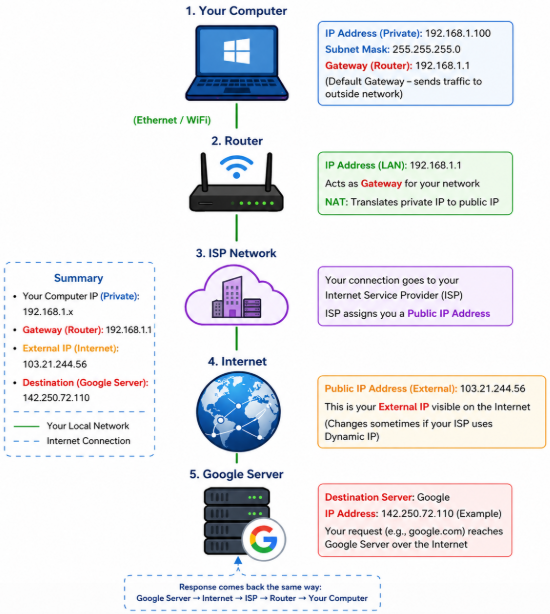
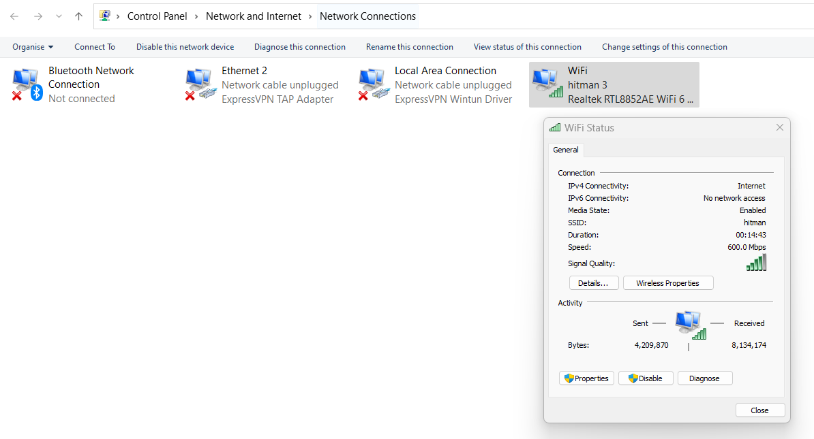
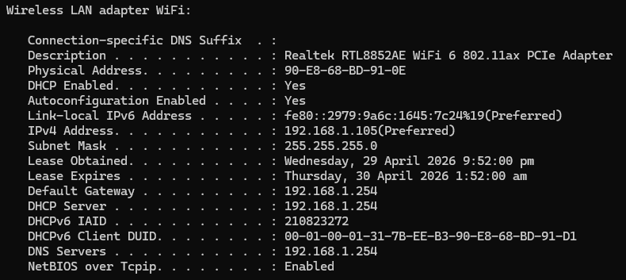
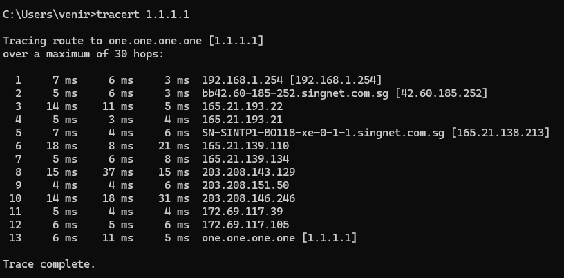
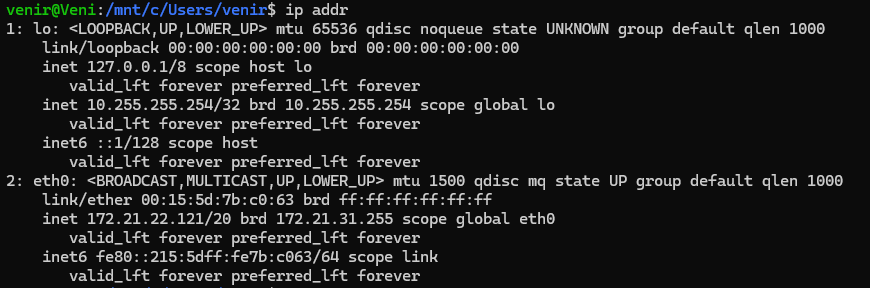
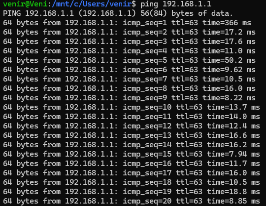
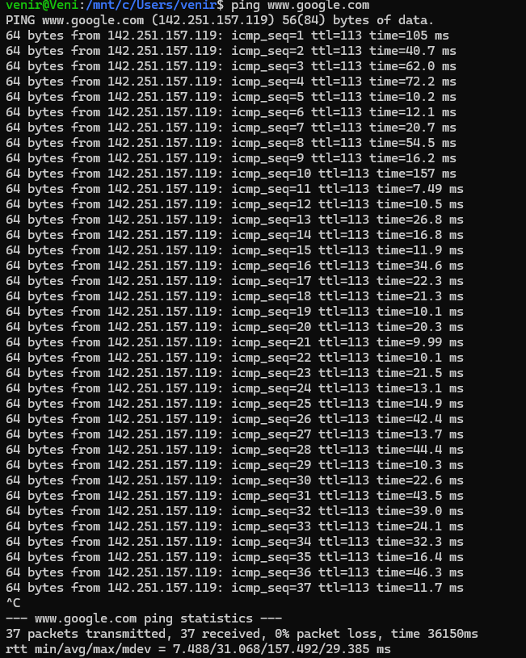

Project 01 / IT Support Troubleshooting Lab
Diagnosing a no-internet incident from IP layer to DNS recovery.
A structured troubleshooting portfolio project showing how network connectivity issues were isolated using Windows and Linux tools, then validated with before-and-after tests.
Troubleshooting Methodology
Follow the signal, layer by layer.
The workflow started with IP configuration, then moved through external connectivity, DNS resolution, adapter health, and remediation. This keeps the diagnosis repeatable and prevents guesswork from driving the repair.
Check IP configuration
Validate DHCP assignment
Ping external IP address
Test domain resolution
Inspect network adapter
Flush DNS and retest
Command Coverage
Windows and Linux diagnostics used together.
Windows
ipconfig
ipconfig /all
ping 1.1.1.1
ping www.google.com
tracert 1.1.1.1
ipconfig /flushdns
Linux / WSL Ubuntu
ip addr
ip route
ping 192.168.1.1
ping 1.1.1.1
ping www.google.com
cat /etc/resolv.conf
Network Architecture
Private host to public service path.
The case study traces the path from a private endpoint through the default gateway, ISP network, public routing, and an external server. Each hop becomes a checkpoint for narrowing the failure.

Evidence Gallery
Command output and configuration checks.






Before vs After
The fix restored valid addressing and internet access.
Test
Before Fix
After Fix
IP Address
Missing / invalid
Valid assigned
Ping 1.1.1.1
Failed
Successful
Ping google.com
Failed
Successful
Internet Access
Not working
Restored
Key Learnings
Layered diagnosis works
Starting with IP, then testing connectivity and DNS, made the root cause easier to isolate.
DNS can disguise itself
Domain failures can look like full outages, so external IP tests were used as a control.
Cross-platform fluency matters
Windows and Linux checks confirmed the same network behaviour from different tooling angles.